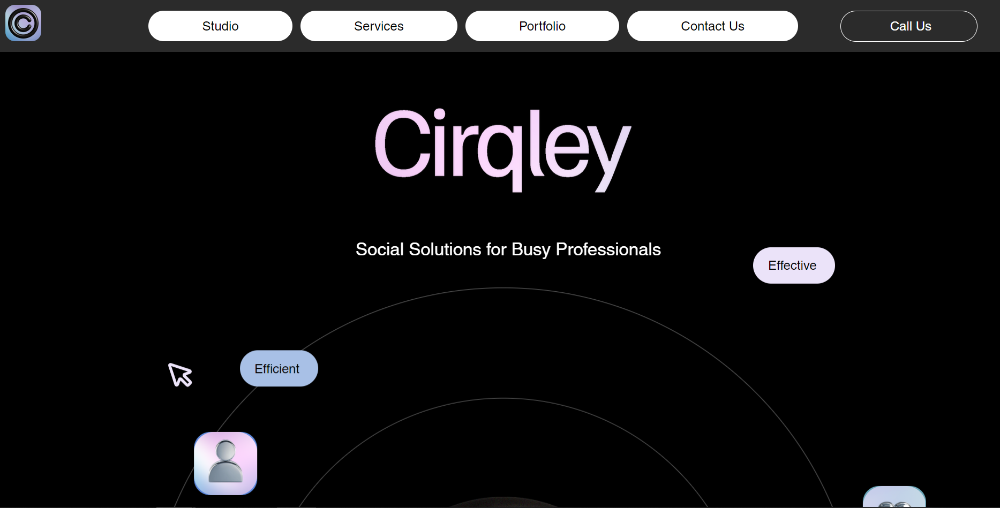

"Dishari" Website Development
This website was divided into two main parts. One part
is for the sailor and ship owner and another part is for the admin panel. Users in the sailor and ship
owner section can access real-time data about their vessel position, speed, course,
and whether there are any other boats in front of them. An
interactive map offers where they also see the other vessel’s
location. Meanwhile, the admin panel section will be able to
view and know all the boat’s location and other information.
Besides, the website will indicate if there is an overload
problem, if there is a possibility of collusion, and if there
is a fire.
"Cirqley" Website Layout Fixing, Responsive and Speed Optimization

The Cirqley Website Layout Fixing, Responsive, and Speed Optimization involves refining the site's layout for design consistency, addressing any misalignments or broken elements, and enhancing navigation for a smoother user experience. It includes making the website mobile-friendly through flexible grids, media queries, and touch-friendly elements, ensuring it adapts seamlessly across devices. Speed optimization focuses on compressing images, minifying CSS/JavaScript, implementing lazy loading, browser caching, and reducing HTTP requests to deliver a fast and efficient browsing experience.
Developed "Edu Fact" Website using CMS

A customizable and responsive template was used to create a clean layout, allowing easy access on all devices. The site featured a well-structured category system for organizing content, a search bar for easy navigation, and integrated social sharing to broaden reach. Regular updates were managed through Blogger's post functionality, while downloadable resources, basic SEO, and user interaction through comments made the platform a valuable educational hub.
Autonomous Smart Shopping Trolley: Enhancing Retail Experience through Customer-Centric Navigation

In the rapidly changing retail landscape, the quest to improve customer
experience has become paramount. With the advancement of technology,
traditional shopping paradigms are being redefined to meet the growing
demands of modern consumers. The Autonomous Smart Shopping Trolley is
one such innovation that has the potential to transform the retail sector. This
pioneering project aims to transform the traditional shopping experience by
incorporating cutting-edge autonomous navigation technology into the
common shopping cart.